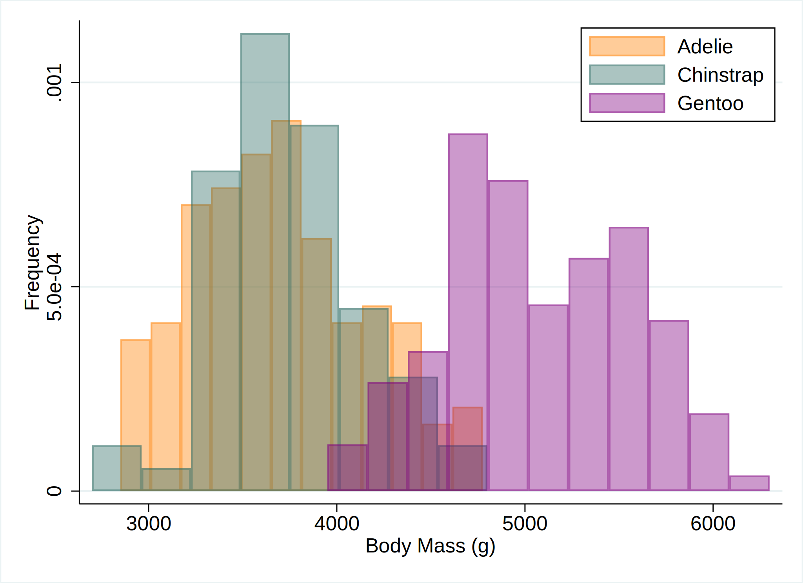

A common misunderstanding about Quarto is that we cannot use multiple languages within a document. Indeed, Jupyter cannot use multiple languages within a document, and we usually use the jupyter engine for Python and Julia (and it is officially supported.)
However, knitr has already been able to execute multiple languages tons of years ago, so why can’t we do it in Quarto?
Let’s see the following example with palmerpenguins::penguins of Horst, Hill, and Gorman (2020)
To run a python code on knitr, install.packages("reticulate")
from palmerpenguins import load_penguinsimport seaborn as snsimport matplotlib.pyplot as pltpenguins = load_penguins()plt.clf()sns.histplot(data=penguins, x='flipper_length_mm', hue='species', palette=['#FF8C00', '#159090', '#A034F0'])plt.xlabel("Flipper length (mm)") plt.ylabel("Frequncy")plt.legend(title ="")plt.show()
Julia
To run a julia code on knitr, run install.packages("JuliaCall"). PalmerPenguins.load() asks you to download the data, so you have to set ENV["DATADEPS_ALWAYS_ACCEPT"] = true to automatically accept it.
Thanks to Statamarkdown, we can easily set the working directory to the directory where the .qmd file exists by just calling cd in Stata.
Stata
cd
C:\Users\kazuh\GitHub\kazuyanagimoto.github.io\blog\2023\04\30\quarto_multi_lan
> g
Then, you can run Stata code in a code chunk.
use palmerpenguins.dta, cleartwoway (hist body_mass_g if species == 1, color(orange%40)) /// (hist body_mass_g if species == 2, color(emerald%40)) /// (hist body_mass_g if species == 3, color(purple%40)), ///xtitle("Body Mass (g)") ytitle("Frequency") ///legend(order(1 "Adelie" 2 "Chinstrap" 3 "Gentoo") pos(1) ring(0) col(1)) ///plotregion(fcolor(white)) graphregion(fcolor(white))graphexport"figure/stata/hist.svg", replace

But you have to manually export an image file for a plot and add it into a document…
Tabset
I think, one of the most useful case is when you want to support multiple source codes in a textbook or lecture notes. Quarto supports Tabset layout and it’s so smart!
Horst, Allison Marie, Alison Presmanes Hill, and Kristen B Gorman. 2020. Palmerpenguins: Palmer Archipelago (Antarctica) Penguin Data. Manual. https://doi.org/10.5281/zenodo.3960218.
Source Code
---title: "Quarto Is Multi-lingual!"date: 2023-4-30author: Kazuharu Yanagimotocategories: [Julia, Python, R, Quarto, Stata]image: img/matthias-heyde-8HLMLrkyLvE-unsplash.jpgtwitter-card: image: img/matthias-heyde-8HLMLrkyLvE-unsplash.jpgknitr: trueexecute: warning: false message: false---A common misunderstanding about Quarto is that we cannot use multiple languageswithin a document.Indeed, _Jupyter_ cannot use multiple languages within a document,and we usually use the jupyter engine for Python and Julia (and it is officially supported.)However, _knitr_ has already been able to execute multiple languages tons of years ago,so why can't we do it in Quarto?Let's see the following example with `palmerpenguins::penguins` of @horst2020### R```{r}#| fig-width: 6#| fig-height: 4#| fig-align: centerlibrary(palmerpenguins)library(ggplot2)ggplot(data = penguins, aes(x = flipper_length_mm)) +geom_histogram(aes(fill = species), alpha =0.5, position ="identity") +scale_fill_manual(values =c("darkorange","purple","cyan4")) +labs(x ="Flipper length (mm)",y ="Frequency",title ="Penguin Flipper Lengths",fill =NULL) +theme_minimal() +theme(panel.grid.major.x =element_blank(),panel.grid.minor =element_blank(),legend.position =c(0.9, 0.9))```### PythonTo run a python code on _knitr_, `install.packages("reticulate")````{python}#| fig-width: 6#| fig-height: 4#| fig-align: centerfrom palmerpenguins import load_penguinsimport seaborn as snsimport matplotlib.pyplot as pltpenguins = load_penguins()plt.clf()sns.histplot(data=penguins, x='flipper_length_mm', hue='species', palette=['#FF8C00', '#159090', '#A034F0'])plt.xlabel("Flipper length (mm)") plt.ylabel("Frequncy")plt.legend(title ="")plt.show()```### JuliaTo run a julia code on _knitr_, run `install.packages("JuliaCall")`.`PalmerPenguins.load()` asks you to download the data,so you have to set `ENV["DATADEPS_ALWAYS_ACCEPT"] = true` to automatically accept it.```{julia}#| fig-width: 6#| fig-height: 4#| fig-align: centerusing PalmerPenguinsusing StatsPlotsusing DataFramesENV["DATADEPS_ALWAYS_ACCEPT"] = true;penguins = DataFrame(PalmerPenguins.load());histogram( [penguins[penguins.species .== species, :].flipper_length_mm for species in ["Adelie", "Chinstrap", "Gentoo"]], label = ["Adelie" "Chinstrap" "Gentoo"], fillcolor = [:darkorange :purple :cyan4], fillalpha = 0.5, xlabel = "Flipper length (mm)", ylabel = "Frequency", title = "Penguin Flipper Lengths", legend = :topright, grid = false, legendfontsize = 7, legendtitle = nothing, bar_width = 5, size = (480, 320), dpi = 300, tickfontsize = 6, guidefontsize = 10, titlefontsize = 12, margin=Plots.Measures.Length(:mm, 2.0))```### StataDouglas Hemken's [Statamarkdown](https://github.com/hemken/Statamarkdown)allows us to use Stata on Rmarkdown (so as on Quarto!)```{r, filename = "R"}# devtools::install_github("Hemken/Statamarkdown")library(Statamarkdown)haven::write_dta(penguins, here::here("blog/2023/04/30/quarto_multi_lang/palmerpenguins.dta"))```Thanks to `Statamarkdown`, we can easily set the working directory to the directory where the `.qmd` file exists by just calling `cd` in Stata.```{stata, filename = "Stata"}cd```Then, you can run Stata code in a code chunk.```{stata, results="hide"}use palmerpenguins.dta, cleartwoway (hist body_mass_g if species == 1, color(orange%40)) /// (hist body_mass_g if species == 2, color(emerald%40)) /// (hist body_mass_g if species == 3, color(purple%40)), /// xtitle("Body Mass (g)") ytitle("Frequency") /// legend(order(1 "Adelie" 2 "Chinstrap" 3 "Gentoo") pos(1) ring(0) col(1)) /// plotregion(fcolor(white)) graphregion(fcolor(white))graph export "figure/stata/hist.svg", replace```But you have to manually export an image file for a plot and add it into a document...## TabsetI think, one of the most useful case is when you want to support multiple source codesin a textbook or lecture notes.Quarto supports [Tabset layout](https://quarto.org/docs/interactive/layout.html#tabset-panel)and it's so smart!::: {.panel-tabset}## R```{r}#| fig-width: 6#| fig-height: 4#| fig-align: centerpenguins |>ggplot(aes(x = flipper_length_mm, y = body_mass_g,color = species, shape = species)) +geom_point(size =3) +scale_color_manual(values =c("darkorange","purple","cyan4")) +labs(x ="Flipper Length (mm)", y ="Body Mass (g)", color =NULL, shape =NULL) +theme_minimal() +theme(legend.position =c(0.9, 0.1),panel.grid.major =element_blank())```## Python```{python}#| fig-width: 6#| fig-height: 4#| fig-align: centerplt.clf()sns.scatterplot(data=penguins, x='flipper_length_mm', y='body_mass_g', hue='species', style="species", palette=['#FF8C00', '#159090', '#A034F0'])plt.xlabel('Flipper Length (mm)')plt.ylabel('Body Mass (g)')plt.legend(title ="")plt.show()```## Julia```{julia}@df penguins scatter( :flipper_length_mm, :body_mass_g, group = :species, markersize = 5, markershape = [:circle :utriangle :rect ], markerstrokecolor = :white, palette = ["#FF8C00", "#159090", "#A034F0"], xaxis = "Flipper Length (mm)", yaxis = "Body Mass (g)", size = (480, 320), dpi = 300, legendfontsize = 8, tickfontsize = 6, guidefontsize = 10, margin=Plots.Measures.Length(:mm, 2.0))```## Stata```{stata, results="hide"}use data/palmerpenguins, clearseparate body_mass_g, by(species)twoway scatter body_mass_g? flipper_length_mm, /// mcolor(orange emerald purple) mlab("") /// msymbol(O T S) /// xtitle("Flipper Length (mm)") ytitle("Body Mass (g)") /// legend(order(1 "Adelie" 2 "Chinstrap" 3 "Gentoo") pos(11) ring(0) col(1)) /// plotregion(fcolor(white)) graphregion(fcolor(white))qui graph export "figure/stata/scatter.svg", replace````{fig-align=center}:::Have a happy Quarto life 🥂!